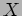

Next: Man against Machine
Up: Adaptive Optimal Telescope Scheduling
Previous: Experiments
Contents
Case Study 1
This investigation involves running a series of one-night simulations under different environmental assumptions to see the effect of varying the value of the SHM weights relative to the priority weight .
The rational behind this investigation is to provide some initial insight into the usefulness of the various SQMs and to provide a shakedown test of the simulation framework on real data. By selecting 2 seperate but similar nights it should be possible to get a preliminary idea on the range of likely values fand variation of SQMs.
The set of remaining objective function weights excluding and are kept constant at zero level throughout the range of test values to avoid any additional biasing. The SQMs used to evaluate the quality of the resulting schedules are  - the optimal airmass metric, - the execution time weighted priority metric, - urgency metric, - demand metric,
- priority weighted optimal airmass and the total execution time as a fraction of available night.
- the optimal airmass metric, - the execution time weighted priority metric, - urgency metric, - demand metric,
- priority weighted optimal airmass and the total execution time as a fraction of available night.
Two nights were considered. Both were similar in terms of amount of dark moon time though the actual night lengths were significantly different. Night 1, 13th-14th October 2007 has xxx hours of lunar dark time out of xxx hours night of which xxx hours are astronomicaly dark. Night 2, 7th-8th November 2007 has xxx hours of lunar dark time out of xxx hours night of which xxx hours are astronomicaly dark.
Table 5:
Case study night characteristics
| Case study night characteristics |
|
| Item |
Night 1 |
Night 2 |
| Date |
14-15 Oct 2007 |
7-8 Nov 2007 |
| Sunset |
18:40 |
18:20 |
| Sunrise |
07:08 |
07:23 |
| Start Astro night |
19:58 |
19:40 |
| End Astro night |
05:50 |
06:03 |
| Moonset |
10:01 |
16:47 |
| Moonrise |
20:27 |
06:05 |
| Length of night |
12:28 |
13:03 |
| Length astro night |
9:52 |
10:23 |
| Length astro moon dark |
7:23 |
10:03 |
| Lunar dark fraction |
75% |
96.7% |
| |
|
|
A series of simulations were performed to determine the range of contention statistics for the 2 study nights. Figures 42(a) and 42(b) show ensemble results from a large number of simulations for the 2 nights.d 44(b).
Figure 42:
Contention profile ensembles for case study nights 1 and 2
[Contention profile  ensemble for night 2.]
![\includegraphics[scale=0.25, angle=-90]{figures/cont4_ensemble.eps}](img400.png)
[Contention profile ensemble for night 1.]
|
A comparison for several runs using fixed execution models and various environmental models are displayed in figures 44(a) and 44(a) (Wrong labels !)
Figure 43:
Effects of environment model on contention profile for night 1
[Variation of contention profile under  night 1.]
[Variation of contention profile under night 1.]
[Variation of contention profile under night 1.]
[Variation of contention profile under night 1.]
[Variation of contention profile under mixed environment for night 1.]
|
Figure 44:
Effects of environment model on contention profile for night 2
[Variation of contention profile under night 2.]
[Variation of contention profile under night 2.]
[Variation of contention profile under night 2.]
[Variation of contention profile under night 2.]
[Variation of contention profile under mixed environment for night 2.]
|
For both nights simulations were run using a basic rank scoring selection mechanism
which selects the highest scoring group from the set of candidate metrics. In addition a second simulation was performed using a random selection model
in which all candidates have equal chance of selection irrespective of their relative scores. This was to provide an indication of how well the normal selection and scoring mechanisms perform against a baseline.
The following models were fixed in all cases:-
- Charge Accounting Model
is described in 7(a).
- Scoring model
was setup initially with no weighting parameters as these are to be varied during the experment.
- Execution timing and feasibility model  is described in 7(b).
- Stochastic execution mode
 is described in 7(c).
is described in 7(c).
Results of the random selection models were as follows:-
Table 7:
Results for Night 1 under
| Results for Random slection model
|
| Metric |
|
|
|
|
|
|
| Average |
0.835 |
1.332 |
2.957 |
0.907 |
23.976 |
1.086 |
| Minimum |
0.775 |
0.921 |
1.417 |
0.881 |
15.331 |
0.765 |
| Maximum |
0.887 |
1.698 |
5.000 |
0.932 |
33.225 |
1.417 |
| SDev |
0.0225 |
0.1357 |
0.8021 |
0.0081 |
3.6253 |
0.1258 |
| |
|
|
|
|
|
|
|
Table 8:
Results for Night 1 under
| Results for Random slection model
|
| Metric |
|
|
|
|
|
|
| Average |
0.817 |
1.217 |
2.851 |
0.929 |
21.339 |
0.999 |
| Minimum |
0.771 |
0.817 |
1.096 |
0.908 |
10.410 |
0.643 |
| Maximum |
0.875 |
1.510 |
4.842 |
0.956 |
30.924 |
1.346 |
| SDev |
0.023 |
0.1268 |
0.7203 |
0.0079 |
3.5596 |
0.1179 |
| |
|
|
|
|
|
|
|
Table 9:
Results for Night 2 under
| Results for Random slection model
|
| Metric |
|
|
|
|
|
|
| Average |
0.826 |
0.966 |
3.580 |
0.860 |
23.605 |
0.797 |
| Minimum |
0.782 |
0.644 |
1.916 |
0.834 |
16.081 |
0.548 |
| Maximum |
0.866 |
1.233 |
5.236 |
0.875 |
30.205 |
1.065 |
| SDev |
0.0165 |
0.1174 |
0.6754 |
0.0063 |
2.6545 |
0.1013 |
| |
|
|
|
|
|
|
|
Table 10:
Results for Night 2 under
| Results for Random slection model
|
| Metric |
|
|
|
|
|
|
| Average |
0.811 |
0.812 |
3.930 |
0.900 |
28.765 |
0.669 |
| Minimum |
0.745 |
0.575 |
2.079 |
0.885 |
20.535 |
0.439 |
| Maximum |
0.864 |
1.118 |
6.264 |
0.908 |
40.172 |
0.908 |
| SDev |
0.0221 |
0.1123 |
0.8007 |
0.0038 |
3.746 |
0.1020 |
| |
|
|
|
|
|
|
|
First results revealed a surprisingly minor effect of varying especially at values of from 0 to 50% where the plot is particularly flat. The plot then rises rapidly at some cut-in point - further investigation is suggested to see if the cut-in point depends on environment and load factors. In addition the non-linear domain sampling suggested the need for a different regime of domain sampling.
Figure 45:
Results for night 2 (7-8 November 2007) for environment model
[Effect of varying relative to  on schedule quality metric]
![\includegraphics[scale=0.25, angle=-90]{figures/cs1_dw1_px.eps}](img420.png)
[Effect of varying relative to on schedule quality metric]
[Effect of varying relative to on schedule quality metric for Flexible groups]
[Effect of varying relative to on schedule quality metric for Flexible groups]
[Effect of varying relative to on schedule quality metric]
[Effect of varying relative to on schedule quality metric]
|
Figure 46:
Results for night 2 (7-8 November 2007) for environment model
[Effect of varying relative to on schedule quality metric]
[Effect of varying relative to on schedule quality metric]
[Effect of varying relative to on schedule quality metric for Flexible groups]
[Effect of varying relative to on schedule quality metric for Flexible groups]
[Effect of varying relative to on schedule quality metric]
[Effect of varying relative to on schedule quality metric]
|
Figure 47:
Results for night 2 (7-8 November 2007) for variable environment models.
[Comparison of effect of environment model ( , ) on for variable .]
[Comparison of effect of environment model ( , ) on for variable .]
[Comparison of effect of environment model ( , ) on for variable .]
[Comparison of effect of environment model ( , ) on for variable .]
[Comparison of dependancy of on for all groups and flexible groups under environment model .]
[Comparison of dependancy of on for all groups and flexible groups under environment model .]
|
Next: Man against Machine
Up: Adaptive Optimal Telescope Scheduling
Previous: Experiments
Contents
Steve Fraser
2008-01-31